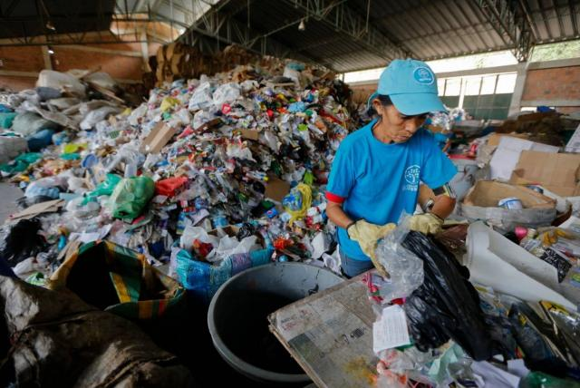
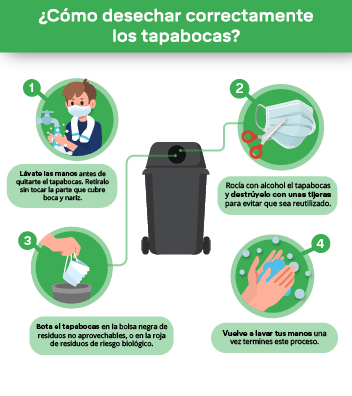
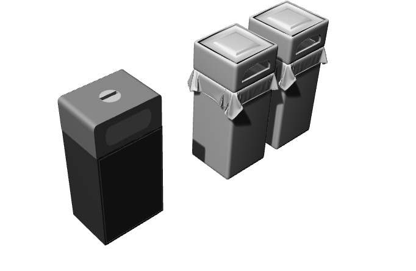

San Andrés, uno de los paraísos turísticos del Caribe, se liberará semanalmente de tres toneladas de plástico que serán enviadas en un avión a Bogotá, donde serán tratadas y reutilizadas en lugar de terminar como basura en el mar.
El proyecto es resultado de una alianza entre una organización de la comunidad negra raizal que habita la isla y la aerolínea Latam, para darle un mejor trato a las más de 25.000 toneladas de residuos que produce la isla, de 26 kilómetros cuadrados y la principal del archipiélago caribeño de San Andrés, Providencia y Santa Catalina.
Los residuos provienen de los más de 3.000 habitantes por kilómetro cuadrado que la habitan y sobre todo de su población flotante, que es 1,3 millones de turistas al año.
Para revertir la situación, la ONG Schooner Night Ethnic Association capacitó a 12 jóvenes para que acondicionaran una planta donde separan, compactan y trituran residuos que recogen al visitar 30 hoteles y recorrer barrios de la isla.
Por iniciativa del Ministerio de Interior y el apoyo del Programa de Naciones Unidas para el Desarrollo (PNUD), los materiales que recolectan son enviados a Bogotá para que se vuelvan a comercializar.
El objetivo es llegar a enviar tres toneladas semanales para "crear un círculo de economía circular", explicó en rueda de prensa Daniel Mitchell, presidente de Acoplásticos, la empresa que se encarga de contactar con las compañías que reutilizarán el plástico en Bogotá. [6]

Para desechar los tapabocas se deben seguir los siguientes requerimientos :primero estos deben ser desechados en un contenedor cerrado , se recomienda cortarlos para luego aplicarles un desinfectante (el más usado es el etanol al 70%) y por último estos residuos se deben almacenar en una bolsa de color negro para diferéncialos de los otros residuos sólidos.

Por lo tanto estas baterías inteligentes Constan de tres compartimientos: el primero recolectará residuos orgánicos, el segundo recolectará residuos Inorgánicos y el tercero es para los residuos peligrosos como tapabocas , en donde para este último contará un compartimiento que cumplirá el protocolo estipulado para el manejo de estos residuos, con el fin de disminuir la contaminación en el manglar Maracaná.
